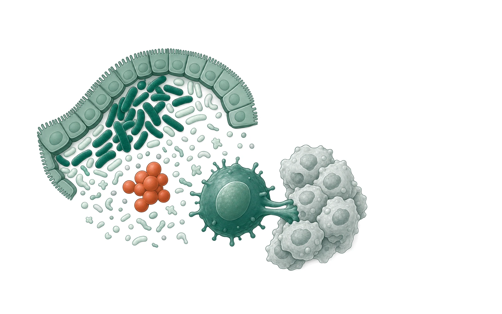
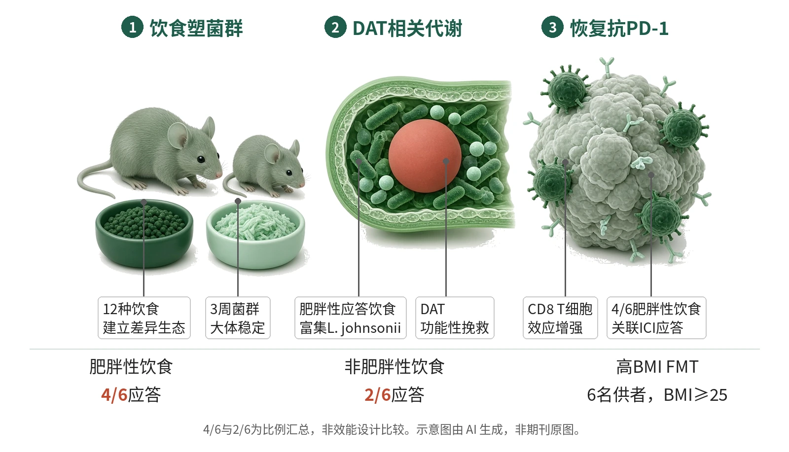

封面示意：肠道菌群与CD8 T细胞间，赤陶红为代谢物DAT。图片由 AI 生成，非原文图片。
在12种小鼠饮食模型中，4/6肥胖性饮食关联抗PD-1应答，提示关键不在代谢评分而在饮食-肠道菌群轴。
主领域：肿瘤免疫与细胞治疗 相关：疾病模型 / 抗PD-1 / 肠道菌群 / 饮食干预 / Lactobacillus johnsonii / 粪菌移植
关键数据卡
- 研究类型：小鼠多饮食临床前机制研究，结合16S测序、宏基因组、代谢组、单菌定植和人源/鼠源FMT
- 样本量 n：12种饮食；15周模型中Japanese n=14，其余饮食n=15；主要ICI图中Psyllium抗PD-1 n=3，Ketogenic、Vegan、Pectin、Low Fat抗PD-1 n=4，多数组别n=5
- 对照：IgG同型对照；Psyllium或High Fat饮食、PBS灌胃、低/高BMI供者FMT等按实验设置作对照
- 干预/剂量：主要GCI ICI试验中抗PD-1为10 mg kg−1每3天腹腔给药；CRCHUM人源FMT、单菌补充和无菌模型等使用250 µg固定剂量；并结合饮食切换、FMT、L. johnsonii补充或单菌定植、DAT饮水补充
- 随访：主要肿瘤试验16–24天；饮食暴露3周或15周；饮食切换在首次治疗前48 h
- 主要终点：临床前核心读出：各饮食中抗PD-1相对IgG是否显著降低终点肿瘤体积，并据此计算ICI应答/敏感性
- 主要终点结果：肥胖性饮食4/6（66.7%）关联ICI应答；非肥胖性饮食2/6（33.3%）关联ICI应答；12种饮食中ICI评分与体重、脂肪量、糖耐量、胰岛素、瘦素或代谢评分无显著关联
- 统计量：样本量由历史数据确定而非效能计算；肿瘤生长曲线用多重双侧Mann–Whitney检验，相关为双侧Spearman
- 安全性：动物实验按人道终点执行：肿瘤溃疡、总体积超过2.5 cm3或出现不良临床体征时提前终止
- 证据等级：全文
- 核对记录：读了Europe PMC fullTextXML PMC13558080的Abstract、Results、Methods、图注、Discussion和Limitations

- 多饮食塑造菌群生态
- Lactobacillus在应答饮食富集
- L. johnsonii在肥胖性应答饮食中富集
- DAT增强T细胞效应功能
- 抗PD-1敏感性被恢复
机制图概括饮食-菌群-代谢物链条：High Fat等背景富集Lactobacillus/L. johnsonii，并支持DAT相关菌群酪氨酸代谢轴；DAT增强肿瘤T细胞效应功能，使抗PD-1更易控制HKP1肿瘤。示意图由 AI 生成，依据原文结果绘制，非期刊原图，不代表分子比例
研究背景与待解问题
高BMI在多癌种患者中与免疫检查点抑制剂疗效较好相关，但肥胖同时伴随糖脂代谢异常和菌群改变，单看体重难以拆分因果。常用高脂饲料模型也过于简化，往往只模拟45–60% kcal来自猪油的饮食，不能代表人群饮食差异。
Desharnais等在Nature提出的切口，是把“肥胖悖论”拆成饮食、宿主代谢、免疫状态和肠道菌群四个层面来测。研究重点不是建议患者长期肥胖性饮食，而是追问短期饮食调节、特定菌株或菌源代谢物能否重塑抗PD-1的宿主生态位。
研究设计
发现体系先建立12种小鼠饮食模型，覆盖Low Fat、High Fat、Western、Mediterranean、Japanese、Vegan、American、Aspartame、Ketogenic及3种纤维替换饮食。4周龄雄性C57BL/6J小鼠喂养15周后接种HKP1肺癌细胞，并记录体重、脂肪量、糖耐量、胰岛素和免疫表型。
主要ICI试验中，抗PD-1或IgG按10 mg kg−1每3天腹腔给药，至16–24天终点，饮食持续、肿瘤用手动卡尺监测；“应答”定义为抗PD-1相对IgG显著降低肿瘤体积。3周饮食、48 h饮食切换、鼠源/人源FMT、无菌单菌定植和DAT饮水补充用于检验因果链。样本量由历史数据而非效能计算确定。
核心结果
应答随饮食变化
核心读出来自12种饮食下HKP1抗PD-1试验：肥胖性饮食中4/6（66.7%）关联ICI应答，非肥胖性饮食中为2/6（33.3%）。这一结果说明肥胖性饮食类别可富集应答，但不是所有肥胖性饮食都有效，也不是所有瘦饮食都无效。
代谢评分不解释
反向对照显示，跨12种饮食，ICI评分与体重、脂肪量、糖耐量、胰岛素、瘦素和代谢评分均未见显著关联。代谢评分阈值以均值0.36分出6种高分和6种低分饮食，但抗PD-1敏感性没有简单跟随代谢功能障碍。
菌群先于肥胖
菌群分析把应答饮食与Lactobacillaceae和Lactobacillus富集相连，无应答饮食则富集Bacteroidaceae、Sutterellaceae和Bacteroides；该模式在肿瘤接种前和终点均可见。更关键的是，菌群组成在3周时已大体稳定，早于持续至15周的后续增重；3周High Fat与Psyllium模型仍能重现HKP1抗PD-1应答差异。
切换与FMT支持因果
饮食切换给出双向证据：Psyllium→High Fat足以使HKP1肿瘤对抗PD-1敏感，而High Fat→Psyllium使其去敏感，切换后48 h即可检测到Lactobacillus上升或Bacteroides下降。鼠源FMT中，High Fat受体即使接受Psyllium供体菌群，终点也向High Fat菌群聚类。
单菌和代谢物闭环
在抗生素处理SPF小鼠中，High Fat联合L. johnsonii补充使抗PD-1治疗的全部小鼠完全应答；PBS灌胃无此效应。同一ICI无应答肺癌供者的FMT在Psyllium下仍不敏感，在High Fat下转为敏感。DAT补充足以逆转这一效应并使小鼠对抗PD-1敏感。高BMI供者FMT臂含6名供者、BMI≥25，出现显著抗PD-1效应；低BMI臂含3名供者、BMI<25，未见效应。
机制解读
原文实验证明：原文直接证明了饮食可重塑菌群并改变抗PD-1结局：12种饮食产生不同菌群，应答饮食富集Lactobacillus；3周饮食足以建立菌群状态；Psyllium与High Fat双向切换分别造成敏化和去敏化；抗生素可削弱High Fat背景下的抗PD-1敏感性。
原文还直接证明了菌株和代谢物的功能环节。L. johnsonii在High Fat背景下的单菌定植或补充增强抗PD-1，并在SPF小鼠中产生全部完全应答；L. johnsonii加Psyllium或M. gordoncarteri加High Fat只呈部分敏感。DAT在血清和菌上清实验中与该轴相连，DAT饮水补充能挽救Psyllium耐药模型。
作者推测：作者推测，更保守的决定因素可能不是单一L. johnsonii菌种，而是饮食条件下的菌群生态和芳香族氨基酸代谢功能。Discussion提出，DAT相关的酪氨酸来源phenylpropionate通路、ILA等吲哚类色氨酸通路可能互补或协同；这些通路可能通过增强T细胞效应功能来提高抗PD-1敏感性，但复杂菌群中的具体贡献仍未完全拆开。
局限与不确定
- 第一，4/6（66.7%）对2/6（33.3%）是12种饮食中的比例汇总；Methods写明样本量由历史数据确定，而非power calculation。因此它更适合作为临床前核心观察，不应写成正式优效结论。
- 第二，研究使用可移植皮下肿瘤作概念验证；作者明确指出，需要用自发原位模型检验组织特异性微环境如何与宿主菌群和代谢状态相互作用。
- 第三，人源证据仍是供者到小鼠的桥接实验。高BMI供者为6名、低BMI供者为3名；低BMI组中少数应答小鼠来自同一BMI 24.95的供者，接近BMI≥25阈值，还不能证明改变BMI会获益。
- 第四，机制并未收敛到单一分子。ILA在肥胖性应答饮食中升高，却在L. johnsonii无菌定植模型血清中不可检测；DAT更接近功能介质，但其他菌种或菌群组合也可能参与。
临床/产业意义
如果这些小鼠结果能在更贴近临床的原位模型和患者干预研究中复现，肥胖悖论可被重新理解为“饮食—菌群—代谢物”轴，而不是单纯由高BMI或代谢功能障碍驱动。这会把可干预对象从体重本身转向短期饮食调节、FMT前后饮食配伍、特定菌株和菌源代谢物。
但转化边界同样清楚：作者不主张患者长期采用肥胖性饮食，因为其健康风险已知。更可行的方向，是在抗PD-1治疗或FMT策略中测试短期饮食窗口、L. johnsonii样菌株、DAT或相关phenylpropionate代谢轴。
作者、出处与核对
Desharnais L, Swaby A, Messaoudene M, Doré S, Yu MW, Fiset B, 等. Diet–microbiome synergy underlies obesity-associated immunotherapy efficacy. Nature. 2026. https://doi.org/10.1038/s41586-026-10750-x
证据等级：全文；核对记录：读了Europe PMC fullTextXML PMC13558080的Abstract、Results、Methods、图注、Discussion和Limitations